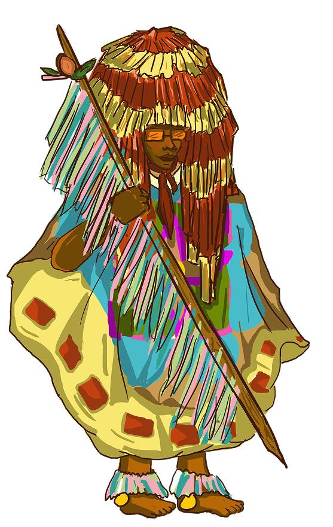
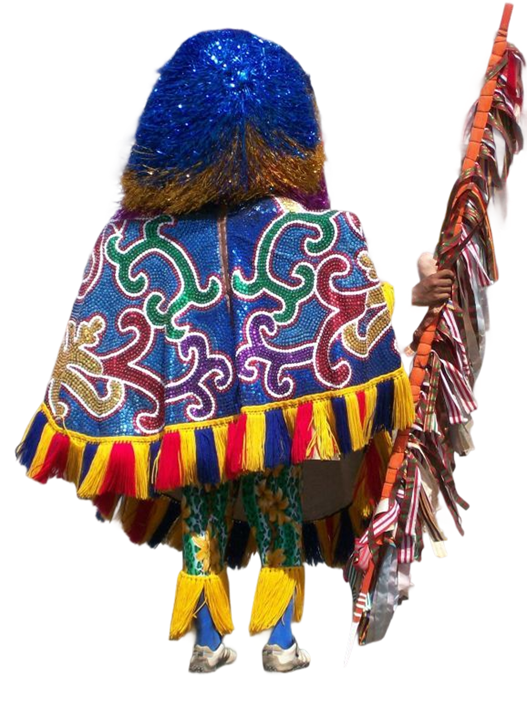
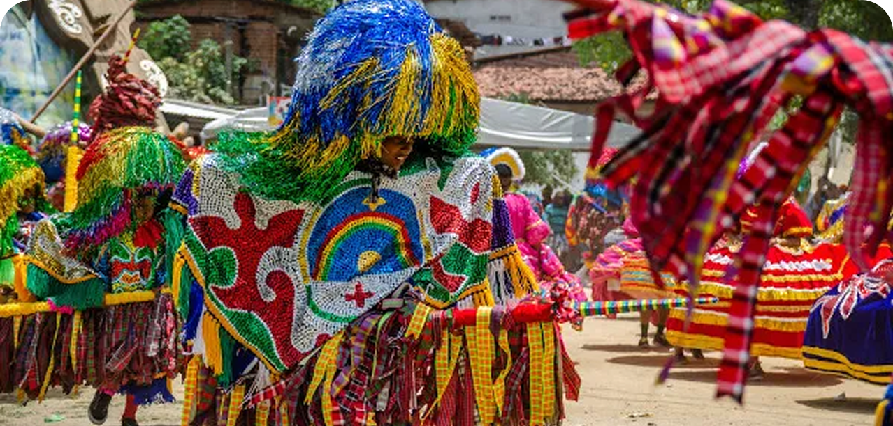
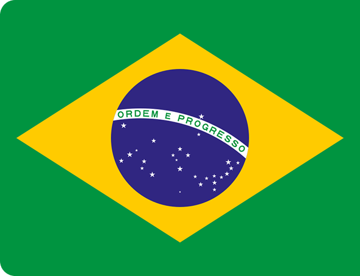
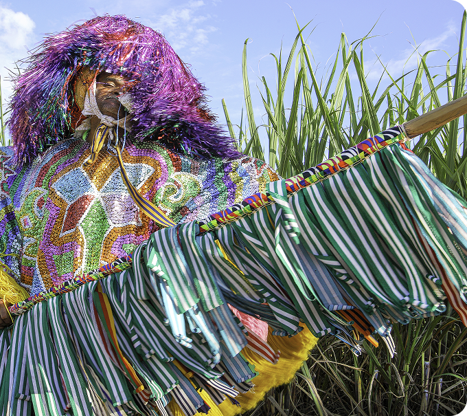

BRASIL
Maracatu Rural
Cabloco de Lança

O Caboclo de Lança é o personagem mais emblemático do Maracatu Rural (ou Maracatu de Baque Solto), manifestação cultural de origem pernambucana ligada às tradições afro-indígenas e ao cotidiano dos trabalhadores rurais da Zona da Mata. Ele é a figura central do cortejo e representa força, proteção, resistência e espiritualidade dentro da festa.
O Maracatu Rural surgiu na Zona da Mata de Pernambuco entre o final do século XIX e o início do século XX, ligado aos trabalhadores dos engenhos de cana-de-açúcar. Resultado da mistura de influências africanas, indígenas e portuguesas, a manifestação tornou-se uma forma de resistência cultural e expressão da identidade coletiva. Nesse contexto, o Caboclo de Lança surgiu como personagem central, simbolizando a força, a memória e a luta das comunidades rurais.
No Maracatu Rural, o Caboclo de Lança realiza uma performance marcada por movimentos firmes com a lança, acompanhando a música e os cantos do cortejo. Atuando como protetor simbólico da apresentação, sua dança combina elementos de guerra, ritual e celebração, representando a força, a identidade e a resistência das comunidades rurais pernambucanas.
A vestimenta do Caboclo de Lança é uma das mais marcantes do Maracatu Rural, composta por elementos coloridos e ornamentados que expressam a riqueza cultural da tradição. O traje inclui uma grande gola bordada com lantejoulas e espelhos, chapéu decorado com fitas, calças com franjas, chocalhos presos às costas e uma lança enfeitada. Completam a caracterização a pintura facial, o lenço no pescoço e a tradicional flor branca na boca. Mais do que adornos, esses elementos possuem significados ligados à proteção espiritual, à identidade coletiva e à ancestralidade da manifestação.


É uma manifestação do folclore brasileiro que une música, dança e tradição, com origem no período colonial a partir da mistura das culturas africana, indígena e portuguesa. O Maracatu Rural é uma vertente do Maracatu que surgiu nos engenhos da Zona da Mata, entre os séculos XIX e XX. O seu cortejo representa as brincadeiras dos trabalhadores rurais na época colonial. O caboclo de lança é um personagem característico dessa festividade, usando um traje com fitas coloridas na cabeça, gola com lantejoulas e uma flor branca na boca.

Maior país da América do Sul, o Brasil é resultado do encontro entre povos indígenas, africanos e europeus. O português é a língua oficial, mas centenas de idiomas indígenas continuam sendo falados em diferentes regiões do território. Sua história foi marcada pela colonização portuguesa, pela escravidão africana e pela ditadura militar entre 1964 e 1985.
O Maracatu Rural, surgido na Zona da Mata pernambucana, expressa essa mistura de influências. Entre caboclos de lança, cortejos e música, a manifestação preserva elementos africanos, indígenas e populares que resistiram ao apagamento histórico. Mais do que uma festa, o Maracatu é uma celebração da memória coletiva dos trabalhadores rurais e das comunidades que encontraram na cultura uma forma de preservar sua identidade.
